<meta charset="utf-8">
<title>TelcoVantage ERP — User Guide</title>
<style>
  :root{
    --ink:#0b1220; --ink2:#1e293b; --muted:#5b6b7f; --muted-2:#7c8aa0;
    --emerald:#16a34a; --emerald-700:#15803d; --emerald-900:#14532d;
    --emerald-soft:#dcfce7; --emerald-tint:#ecfdf3;
    --line:#e8edf2; --line-2:#eef2f6;
    --bg:#f7f9fb; --card:#ffffff;
    --amber:#b45309; --amber-soft:#fef6e7; --amber-line:#f6dfae;
    --blue:#1d4ed8; --blue-soft:#eaf1fe; --blue-line:#cadcfb;
    --violet:#6d28d9; --violet-soft:#f4f1fe; --violet-line:#e2d9fb;
    --rose:#be123c; --rose-soft:#fff0f2; --rose-line:#fbcdd5;
  }
  @page{ size:A4; margin:0; }
  *{ box-sizing:border-box; }
  html{ -webkit-print-color-adjust:exact; print-color-adjust:exact; }
  body{
    margin:0; color:var(--ink); background:var(--bg);
    font-family:"Segoe UI Variable Text","Segoe UI",-apple-system,Helvetica,Arial,sans-serif;
    font-size:10.3pt; line-height:1.55;
  }
  h1,h2,h3,h4{ font-family:"Segoe UI Variable Display","Segoe UI",-apple-system,Arial,sans-serif; color:var(--ink); }

  /* ---- page system ---- */
  .page{
    position:relative; width:210mm; height:297mm;
    padding:18mm 18mm 22mm; margin:0 auto; background:var(--bg);
    overflow:hidden; break-after:page;
  }
  .page:last-child{ break-after:auto; }
  .bleed{ padding:0; } /* full-bleed pages (cover) */

  /* soft brand blobs */
  .blob{ position:absolute; border-radius:50%; filter:none; z-index:0; pointer-events:none; }
  .blob.mint{ background:radial-gradient(circle at 30% 30%, #b8f0d0 0%, rgba(184,240,208,0) 68%); }
  .blob.peri{ background:radial-gradient(circle at 30% 30%, #cdd9f7 0%, rgba(205,217,247,0) 68%); }
  .page > *:not(.blob):not(.foot){ position:relative; z-index:1; }

  p{ margin:7px 0; }
  strong{ color:var(--ink2); }
  a{ color:var(--emerald-700); text-decoration:none; }
  code,.kbd{ font-family:"Cascadia Code","Consolas",monospace; font-size:8.6pt; background:#eef2f7; border:1px solid var(--line); border-radius:5px; padding:1px 6px; color:#243244; }
  .path{ font-family:"Cascadia Code","Consolas",monospace; font-size:8.6pt; color:var(--emerald-700); background:var(--emerald-tint); border:1px solid #cfead9; border-radius:5px; padding:1px 6px; white-space:nowrap; }

  /* ---- eyebrow + headings ---- */
  .eyebrow{ color:var(--emerald); font-weight:700; font-size:8.6pt; letter-spacing:.18em; text-transform:uppercase; margin:0 0 10px; }
  h2.title{ font-size:30pt; font-weight:800; letter-spacing:-.028em; line-height:1.04; margin:0 0 12px; }
  .lead{ font-size:12pt; color:var(--muted); max-width:150mm; margin:0 0 8px; line-height:1.5; }
  h3{ font-size:14pt; font-weight:800; letter-spacing:-.02em; margin:26px 0 8px; }
  h3 .num{ color:var(--emerald); font-weight:800; margin-right:8px; }
  h4{ font-size:11pt; font-weight:700; margin:16px 0 4px; color:var(--ink2); }

  ul,ol{ margin:7px 0 10px; padding-left:20px; }
  li{ margin:3px 0; }

  /* ---- chapter opener label ---- */
  .ch-index{ display:flex; align-items:baseline; gap:12px; margin-bottom:2px; }
  .ch-index .big{ font-size:12pt; font-weight:800; color:var(--emerald); letter-spacing:.02em; }

  /* ---- numbered steps (green badges) ---- */
  ol.steps{ counter-reset:s; list-style:none; padding:0; margin:12px 0; }
  ol.steps>li{ position:relative; padding:3px 0 9px 40px; margin:0; }
  ol.steps>li::before{
    counter-increment:s; content:counter(s,decimal-leading-zero);
    position:absolute; left:0; top:1px; width:26px; height:26px; border-radius:50%;
    background:var(--emerald-soft); color:var(--emerald-700);
    font-family:"Segoe UI Variable Display","Segoe UI",sans-serif; font-weight:800; font-size:8.5pt;
    display:flex; align-items:center; justify-content:center; border:1px solid #bfe8cd;
  }
  ol.steps>li:not(:last-child)::after{
    content:""; position:absolute; left:12.5px; top:28px; bottom:2px; width:1.5px; background:linear-gradient(#cdebd8, rgba(205,235,216,0));
  }

  /* ---- key-point list (like deck feature bullets) ---- */
  ul.points{ list-style:none; padding:0; margin:12px 0; }
  ul.points>li{ position:relative; padding:6px 0 6px 40px; font-weight:600; color:var(--ink2); font-size:10.6pt; }
  ul.points>li .n{ position:absolute; left:0; top:5px; width:26px; height:26px; border-radius:8px; background:var(--emerald-tint); border:1px solid #cfead9; color:var(--emerald-700); font-weight:800; font-size:8.3pt; display:flex; align-items:center; justify-content:center; }

  /* ---- screenshot browser frame ---- */
  figure.shot{ margin:16px 0 6px; break-inside:avoid; }
  .frame{
    border-radius:14px; overflow:hidden; background:#fff;
    border:1px solid var(--line);
    box-shadow:0 26px 50px -22px rgba(11,40,28,.30), 0 8px 22px -12px rgba(15,23,42,.14);
  }
  .frame .bar{ height:32px; display:flex; align-items:center; gap:7px; padding:0 13px; background:#f1f5f9; border-bottom:1px solid var(--line); }
  .frame .bar i{ width:10px; height:10px; border-radius:50%; display:inline-block; }
  .d-r{ background:#f87171 } .d-y{ background:#fbbf24 } .d-g{ background:#34d399 }
  .frame .addr{ margin-left:8px; font-family:"Cascadia Code","Consolas",monospace; font-size:8pt; color:#9aa7b8; background:#fff; border:1px solid var(--line); border-radius:6px; padding:3px 12px; flex:1; }
  .frame img{ display:block; width:100%; height:auto; }
  /* Cap content screenshots so a tall form doesn't consume a whole page;
     crop to the top (the meaningful part), deck-style. Cover hero is exempt. */
  figure.shot .frame img{ max-height:80mm; object-fit:cover; object-position:top center; }
  figure.shot figcaption{ font-size:8.8pt; color:var(--muted); text-align:center; margin-top:8px; }

  /* ---- cards ---- */
  .cards{ display:flex; gap:12px; margin:14px 0; }
  .card{ flex:1; background:var(--card); border:1px solid var(--line); border-radius:14px; padding:14px 15px; box-shadow:0 8px 18px -14px rgba(15,23,42,.18); }
  .card .k{ font-size:8pt; font-weight:800; color:var(--emerald); letter-spacing:.06em; }
  .card h4{ margin:6px 0 4px; font-size:10.5pt; }
  .card p{ margin:0; font-size:9pt; color:var(--muted); }

  /* ---- callouts ---- */
  .callout{ border-radius:12px; padding:11px 15px; margin:13px 0; font-size:9.6pt; border:1px solid; break-inside:avoid; }
  .callout .t{ font-weight:800; display:block; font-size:8.4pt; letter-spacing:.06em; text-transform:uppercase; margin-bottom:3px; }
  .tip{ background:var(--emerald-tint); border-color:#cfead9; color:#12603a; } .tip .t{ color:var(--emerald-700); }
  .note{ background:var(--blue-soft); border-color:var(--blue-line); color:#1a3a86; } .note .t{ color:var(--blue); }
  .warn{ background:var(--amber-soft); border-color:var(--amber-line); color:#7c4a06; } .warn .t{ color:var(--amber); }
  .perm{ background:var(--violet-soft); border-color:var(--violet-line); color:#4c2889; } .perm .t{ color:var(--violet); }

  /* ---- tables ---- */
  table.grid{ width:100%; border-collapse:separate; border-spacing:0; margin:12px 0; font-size:9.1pt; border:1px solid var(--line); border-radius:12px; overflow:hidden; }
  table.grid th,table.grid td{ padding:8px 11px; text-align:left; vertical-align:top; border-bottom:1px solid var(--line-2); }
  table.grid th{ background:var(--ink); color:#fff; font-weight:600; font-size:8.6pt; letter-spacing:.02em; }
  table.grid tr:last-child td{ border-bottom:none; }
  table.grid tbody tr:nth-child(even) td{ background:#f9fbfc; }
  .pill{ display:inline-block; border-radius:999px; padding:1px 9px; font-size:7.6pt; font-weight:800; letter-spacing:.02em; }
  .pill.g{ background:var(--emerald-soft); color:var(--emerald-700) } .pill.b{ background:var(--blue-soft); color:var(--blue) }
  .pill.a{ background:var(--amber-soft); color:var(--amber) } .pill.r{ background:var(--rose-soft); color:var(--rose) }
  .pill.s{ background:#eef2f6; color:#64748b }
  .yes{ color:var(--emerald-700); font-weight:800 } .no{ color:#c2ccd8 }

  .role-line{ font-size:9pt; color:var(--muted); margin:2px 0 8px; }
  hr.soft{ border:none; border-top:1px solid var(--line); margin:20px 0; }

  /* ---- footer band ---- */
  .foot{ position:absolute; left:18mm; right:18mm; bottom:9mm; display:flex; justify-content:space-between; align-items:center; font-size:8pt; color:#9aa7b8; z-index:2; }
  .foot .brand{ display:flex; align-items:center; gap:7px; font-weight:700; color:#64748b; }
  .foot .brand .logo{ width:16px; height:16px; border-radius:5px; background:linear-gradient(135deg,var(--emerald),var(--emerald-900)); display:inline-block; }
  .foot .pg{ font-weight:800; color:var(--emerald-700); }
</style>

<!-- ==================================================== COVER ==================================================== -->
<section class="page bleed" style="display:flex;flex-direction:column;justify-content:flex-end;padding:0 0 34mm;background:linear-gradient(160deg,#ffffff 0%, #f2f8f4 55%, #eef3fb 100%);">
  <div class="blob mint" style="width:520px;height:520px;top:-150px;right:-130px;"></div>
  <div class="blob peri" style="width:440px;height:440px;bottom:-170px;left:-160px;"></div>

  <!-- hero screenshot bleeding off the right, upper area (flat = stays crisp in print) -->
  <div style="position:absolute;right:-46mm;top:44mm;width:196mm;">
    <div class="frame" style="box-shadow:0 44px 84px -34px rgba(11,40,28,.38);">
      <div class="bar"><i class="d-r"></i><i class="d-y"></i><i class="d-g"></i><span class="addr">erp.telcovantage.com/dashboard</span></div>
      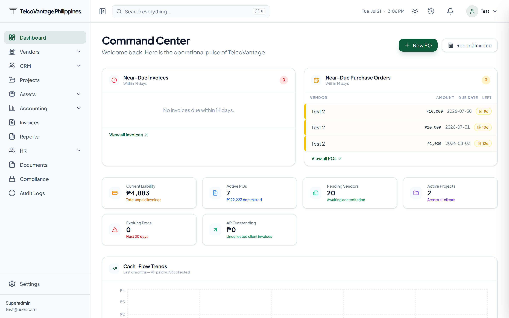
    </div>
  </div>

  <!-- text block, lower area -->
  <div style="padding:0 18mm;">
    <div class="eyebrow" style="font-size:9.5pt;">TelcoVantage ERP · User Guide</div>
    <h1 style="font-size:44pt;font-weight:800;letter-spacing:-.03em;line-height:1.02;margin:0 0 16px;max-width:150mm;">
      One place.<br>Clearer&nbsp;work.
    </h1>
    <p style="font-size:13.5pt;color:var(--muted);max-width:140mm;margin:0 0 20px;line-height:1.45;">
      A practical, task-by-task guide to running vendors, procurement, finance, CRM, projects, HR, and assets — all in one audited system.
    </p>
    <span style="display:inline-flex;align-items:center;gap:9px;background:#fff;border:1px solid var(--line);border-radius:999px;padding:8px 16px;font-size:10pt;font-weight:600;color:var(--ink2);box-shadow:0 8px 20px -14px rgba(15,23,42,.25);">
      <span style="width:9px;height:9px;border-radius:50%;background:var(--emerald);"></span> Enterprise operations, unified
    </span>
  </div>

  <div style="position:absolute;left:18mm;bottom:14mm;display:flex;align-items:center;gap:9px;color:#64748b;font-weight:700;font-size:10pt;">
    <span style="display:inline-block;width:18px;height:18px;border-radius:6px;background:linear-gradient(135deg,var(--emerald),var(--emerald-900));"></span>
    TelcoVantage Philippines
  </div>
</section>

<!-- ==================================================== CONTENTS ==================================================== -->
<section class="page">
  <div class="blob mint" style="width:340px;height:340px;top:-120px;right:-120px;"></div>
  <div class="eyebrow">Contents</div>
  <h2 class="title">What's inside</h2>
  <p class="lead">The guide is organized by task. Find the module you're working in, then follow the numbered steps. Every entry is clickable in the PDF.</p>

  <table class="grid" style="margin-top:18px;">
    <tbody>
      <tr><td style="width:34px;color:var(--emerald);font-weight:800;">01</td><td><a href="#ch1"><strong>Getting Started</strong></a> — logging in, the workspace, search, notifications, theme</td></tr>
      <tr><td style="color:var(--emerald);font-weight:800;">02</td><td><a href="#ch2"><strong>The Command Center</strong></a> — your daily operations snapshot</td></tr>
      <tr><td style="color:var(--emerald);font-weight:800;">03</td><td><a href="#ch3"><strong>Vendors &amp; Accreditation</strong></a> — onboarding suppliers and the 14-point requirement</td></tr>
      <tr><td style="color:var(--emerald);font-weight:800;">04</td><td><a href="#ch4"><strong>Purchase Orders</strong></a> — create, approve, issue, and bill POs</td></tr>
      <tr><td style="color:var(--emerald);font-weight:800;">05</td><td><a href="#ch5"><strong>Supplier Invoices &amp; Payments</strong></a> — vendor bills, payment requests, payments</td></tr>
      <tr><td style="color:var(--emerald);font-weight:800;">06</td><td><a href="#ch6"><strong>CRM, Client POs &amp; Client Invoices</strong></a> — the customer side and receivables</td></tr>
      <tr><td style="color:var(--emerald);font-weight:800;">07</td><td><a href="#ch7"><strong>Projects &amp; Contracts</strong></a> — link customers, vendors, and contracts</td></tr>
      <tr><td style="color:var(--emerald);font-weight:800;">08</td><td><a href="#ch8"><strong>Document Center</strong></a> — company, vendor, and customer vaults</td></tr>
      <tr><td style="color:var(--emerald);font-weight:800;">09</td><td><a href="#ch9"><strong>HR &amp; Assets</strong></a> — employee 201 files and the asset registry</td></tr>
      <tr><td style="color:var(--emerald);font-weight:800;">10</td><td><a href="#ch10"><strong>Reports</strong></a> — the four PDF reports</td></tr>
      <tr><td style="color:var(--emerald);font-weight:800;">11</td><td><a href="#ch11"><strong>AI Assistant &amp; Imports</strong></a> — the TVPH Assistant and spreadsheet import</td></tr>
      <tr><td style="color:var(--emerald);font-weight:800;">A–C</td><td><a href="#apxA"><strong>Appendices</strong></a> — roles &amp; permissions, glossary, troubleshooting</td></tr>
    </tbody>
  </table>

  <div class="callout note"><span class="t">Before you start</span>What you can see and do depends on your <strong>role</strong> (Admin, Finance, Operations, or Viewer). A purple <strong>Who can do this</strong> box marks each restricted action — see <a href="#apxA">Appendix A</a> for the full matrix.</div>

  <div class="foot"><span class="brand"><span class="logo"></span>TelcoVantage ERP</span><span class="pg">02</span></div>
</section>

<!-- ==================================================== CH 1 ==================================================== -->
<section class="page" id="ch1">
  <div class="blob mint" style="width:360px;height:360px;top:-140px;right:-130px;"></div>
  <div class="ch-index"><span class="big">Chapter 01</span></div>
  <div class="eyebrow">Getting Started</div>
  <h2 class="title">Sign in and get oriented.</h2>
  <p class="lead">Log in, learn the workspace frame you'll see on every screen, and the controls you'll reach for constantly.</p>

  <h3><span class="num">1.1</span>Logging in</h3>
  <p>Open the TelcoVantage ERP address in your browser to reach the sign-in screen.</p>
  <div class="cards">
    <div class="card"><div class="k">OPTION A</div><h4>Email &amp; password</h4><p>Enter your email and password, then click <strong>Sign In</strong>.</p></div>
    <div class="card"><div class="k">OPTION B</div><h4>Microsoft sign-in</h4><p>Click <strong>Sign in with Microsoft</strong> and complete the Microsoft prompt.</p></div>
  </div>
  <figure class="shot">
    <div class="frame"><div class="bar"><i class="d-r"></i><i class="d-y"></i><i class="d-g"></i><span class="addr">erp.telcovantage.com/login</span></div>
    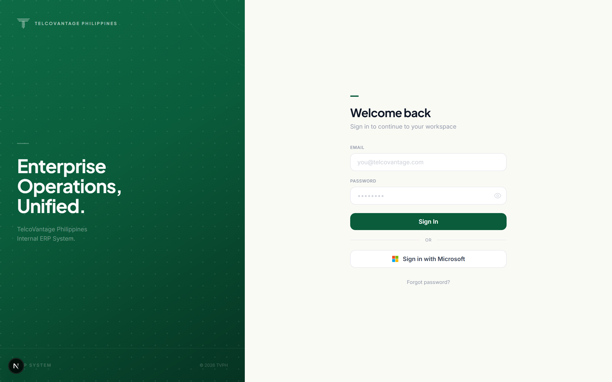</div>
    <figcaption>The sign-in screen — email/password with a Microsoft single sign-on option.</figcaption>
  </figure>
  <div class="callout note"><span class="t">First-time Microsoft users</span>New Microsoft accounts start with the <strong>Viewer</strong> (read-only) role; an administrator assigns your working role afterward, so some menus appear only once your role is set.</div>

  <div class="foot"><span class="brand"><span class="logo"></span>TelcoVantage ERP · Getting Started</span><span class="pg">03</span></div>
</section>

<section class="page">
  <div class="blob peri" style="width:320px;height:320px;bottom:-140px;left:-130px;"></div>
  <h3><span class="num">1.2</span>The workspace layout</h3>
  <p>Every screen shares one frame: a <strong>sidebar</strong> on the left to move between modules, and a <strong>header</strong> across the top for search, tools, and your account. You only see the menus your role allows.</p>
  <figure class="shot">
    <div class="frame"><div class="bar"><i class="d-r"></i><i class="d-y"></i><i class="d-g"></i><span class="addr">erp.telcovantage.com/dashboard</span></div>
    </div>
    <figcaption>The sidebar (left) groups every module; the header (top) holds search, theme, activity, notifications, and your account.</figcaption>
  </figure>

  <div class="cards">
    <div class="card"><div class="k">LEFT</div><h4>Sidebar</h4><p>Dashboard, Vendors, CRM, Projects, Assets, Accounting, Invoices, Reports, HR, Documents, Compliance, and (for superadmins) Audit Logs. Settings is pinned at the bottom.</p></div>
    <div class="card"><div class="k">TOP</div><h4>Header</h4><p>Global search, live clock, light/dark toggle, activity log, the notification bell, and your avatar menu (Profile &amp; Logout).</p></div>
  </div>

  <h3><span class="num">1.3</span>Global search, notifications &amp; theme</h3>
  <ul class="points">
    <li><span class="n">01</span>Press <span class="kbd">Ctrl</span>+<span class="kbd">K</span> (⌘K) to search across vendors, POs, customers, invoices, documents, and more — with quick-create shortcuts.</li>
    <li><span class="n">02</span>The <strong>bell</strong> shows live alerts; click an item to mark it read and jump to the record, or <strong>Mark all read</strong>.</li>
    <li><span class="n">03</span>Use the header <strong>sun/moon</strong> toggle for light or dark; admins set richer themes in <span class="path">Settings → Appearance</span>.</li>
  </ul>
  <div class="callout tip"><span class="t">Your profile</span>Open the avatar menu → <strong>Profile Settings</strong> to change your display name, photo, and password. Your email and role are managed by an administrator.</div>

  <div class="foot"><span class="brand"><span class="logo"></span>TelcoVantage ERP · Getting Started</span><span class="pg">04</span></div>
</section>

<!-- ==================================================== CH 2 ==================================================== -->
<section class="page" id="ch2">
  <div class="blob mint" style="width:360px;height:360px;top:-150px;right:-130px;"></div>
  <div class="ch-index"><span class="big">Chapter 02</span></div>
  <div class="eyebrow">The Command Center</div>
  <h2 class="title">Your operational pulse.</h2>
  <p class="lead">The <strong>Dashboard</strong> is your home screen — a live snapshot of what needs attention across operations and finance.</p>
  <figure class="shot">
    <div class="frame"><div class="bar"><i class="d-r"></i><i class="d-y"></i><i class="d-g"></i><span class="addr">erp.telcovantage.com/dashboard</span></div>
    </div>
    <figcaption>Near-due invoices and POs, current liability, active POs, pending vendors, expiring docs, and cash-flow trends.</figcaption>
  </figure>
  <ul class="points">
    <li><span class="n">01</span>See outstanding liability, active PO count, pending vendors, and expiring documents at a glance.</li>
    <li><span class="n">02</span>The <strong>near-due</strong> cards act as a to-do list — click any row to open the underlying record.</li>
    <li><span class="n">03</span>Track cash-flow trends: payables paid versus receivables collected over the last six months.</li>
  </ul>
  <p class="role-line">Everyone with an account can view the Dashboard; figures reflect the data your role is permitted to see.</p>
  <div class="foot"><span class="brand"><span class="logo"></span>TelcoVantage ERP · Command Center</span><span class="pg">05</span></div>
</section>

<!-- ==================================================== CH 3 ==================================================== -->
<section class="page" id="ch3">
  <div class="blob mint" style="width:360px;height:360px;top:-150px;right:-130px;"></div>
  <div class="ch-index"><span class="big">Chapter 03</span></div>
  <div class="eyebrow">Vendors &amp; Accreditation</div>
  <h2 class="title">Accredited and ready.</h2>
  <p class="lead">Onboard suppliers, collect their accreditation documents, and keep their status current. A vendor must be <strong>active</strong> with an <strong>approved Signed NDA</strong> before you can issue purchase orders to them.</p>
  <figure class="shot">
    <div class="frame"><div class="bar"><i class="d-r"></i><i class="d-y"></i><i class="d-g"></i><span class="addr">erp.telcovantage.com/dashboard/vendors</span></div>
    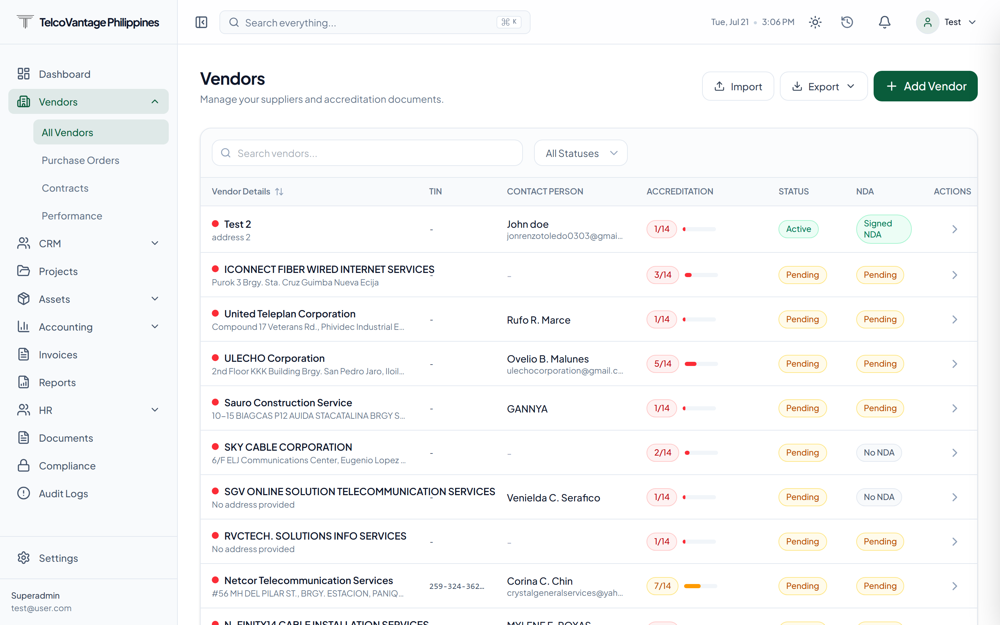</div>
    <figcaption>The vendor list — accreditation progress (x/14), status, and NDA state per supplier.</figcaption>
  </figure>

  <h3><span class="num">3.1</span>Adding a vendor</h3>
  <div class="callout perm"><span class="t">Who can do this</span>Superadmin, Admin, Operations</div>
  <ol class="steps">
    <li>On the vendor list, click <strong>Add Vendor</strong>.</li>
    <li>Under <strong>Company Information</strong>, fill in the <strong>Company Name</strong> (the only required field), plus address and TIN.</li>
    <li>Add the primary <strong>contact</strong>, then <strong>Banking &amp; Terms</strong> (bank details, payment terms, currency).</li>
    <li>Click <strong>Save Vendor</strong>. The vendor is created as <span class="pill a">Pending</span> and opens their profile.</li>
  </ol>
  <figure class="shot">
    <div class="frame"><div class="bar"><i class="d-r"></i><i class="d-y"></i><i class="d-g"></i><span class="addr">erp.telcovantage.com/dashboard/vendors/new</span></div>
    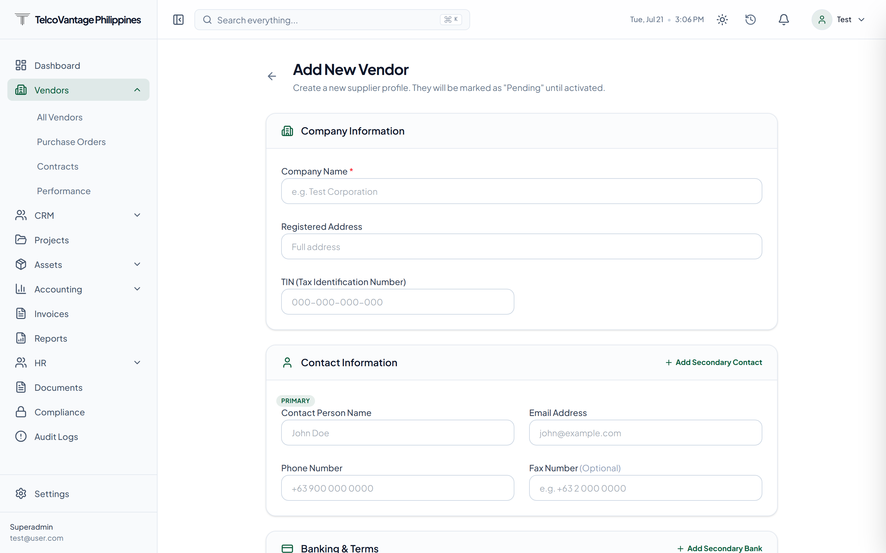</div>
    <figcaption>The Add Vendor form — company information, contacts, and banking &amp; terms.</figcaption>
  </figure>
  <div class="callout note"><span class="t">Pending vs. Active</span>New vendors can't receive POs until an authorized user <strong>activates</strong> them (header → <strong>Activate Vendor</strong>) and their Signed NDA is approved.</div>

  <div class="foot"><span class="brand"><span class="logo"></span>TelcoVantage ERP · Vendors</span><span class="pg">06</span></div>
</section>

<section class="page">
  <div class="blob peri" style="width:320px;height:320px;bottom:-150px;left:-130px;"></div>
  <h3><span class="num">3.2</span>The 14-point accreditation</h3>
  <p>Each vendor's <span class="path">Accreditation Docs</span> tab tracks TelcoVantage's 14 required documents, with a progress bar and an NDA status banner.</p>
  <table class="grid">
    <tbody>
      <tr><td style="width:26px;color:var(--emerald);font-weight:800;">1</td><td>Signed NDA</td><td style="width:26px;color:var(--emerald);font-weight:800;">8</td><td>SEC Registration / Articles</td></tr>
      <tr><td style="color:var(--emerald);font-weight:800;">2</td><td>Statement of Commitment</td><td style="color:var(--emerald);font-weight:800;">9</td><td>Secretary Certificate</td></tr>
      <tr><td style="color:var(--emerald);font-weight:800;">3</td><td>Company Profile &amp; Client References</td><td style="color:var(--emerald);font-weight:800;">10</td><td>Safety &amp; Drug Free Policy</td></tr>
      <tr><td style="color:var(--emerald);font-weight:800;">4</td><td>List of Products or Services</td><td style="color:var(--emerald);font-weight:800;">11</td><td>ISO Certification</td></tr>
      <tr><td style="color:var(--emerald);font-weight:800;">5</td><td>Vendor Information Summary</td><td style="color:var(--emerald);font-weight:800;">12</td><td>PCAB License</td></tr>
      <tr><td style="color:var(--emerald);font-weight:800;">6</td><td>Latest General Information Sheet</td><td style="color:var(--emerald);font-weight:800;">13</td><td>DOLE 174</td></tr>
      <tr><td style="color:var(--emerald);font-weight:800;">7</td><td>Audited Financial Statements (3 yrs)</td><td style="color:var(--emerald);font-weight:800;">14</td><td>Other Licenses or Permits</td></tr>
    </tbody>
  </table>
  <h4>Upload &amp; approve</h4>
  <ol class="steps">
    <li>In a document row click <strong>Upload</strong> (or <strong>Update</strong> to replace). It's saved as <span class="pill b">Submitted</span> and versioned automatically.</li>
    <li>An authorized user clicks <strong>Approve</strong>, sets an <strong>expiry date</strong> (required), and confirms — the document becomes <span class="pill g">Approved</span>.</li>
  </ol>
  <div class="callout perm"><span class="t">Who can approve documents</span>Superadmin, Admin, Operations · <strong>Rollback</strong> a version: Admins only</div>

  <h3><span class="num">3.3</span>Requesting documents &amp; contracts</h3>
  <ul class="points">
    <li><span class="n">01</span><strong>Request Documents</strong> emails the vendor a secure upload portal link (everything not yet approved is pre-selected).</li>
    <li><span class="n">02</span><strong>Generate Portal Link</strong> copies a secure link you can share manually — vendors upload without dashboard access.</li>
    <li><span class="n">03</span><strong>Vendors → Contracts</strong> stores MSAs and formal agreements via <strong>New Contract</strong>.</li>
  </ul>
  <figure class="shot">
    <div class="frame"><div class="bar"><i class="d-r"></i><i class="d-y"></i><i class="d-g"></i><span class="addr">erp.telcovantage.com/dashboard/vendors/contracts</span></div>
    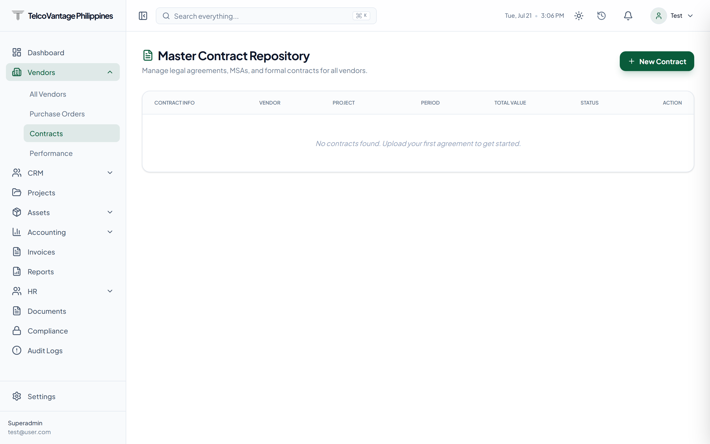</div>
    <figcaption>The Master Contract Repository — legal agreements linked to vendors and projects.</figcaption>
  </figure>
  <div class="callout warn"><span class="t">Deleting a vendor</span>Only a <strong>Superadmin</strong> can permanently delete a vendor, and it can't be undone. In daily work, <strong>deactivate</strong> instead.</div>
  <div class="foot"><span class="brand"><span class="logo"></span>TelcoVantage ERP · Vendors</span><span class="pg">07</span></div>
</section>

<!-- ==================================================== CH 4 ==================================================== -->
<section class="page" id="ch4">
  <div class="blob mint" style="width:360px;height:360px;top:-150px;right:-130px;"></div>
  <div class="ch-index"><span class="big">Chapter 04</span></div>
  <div class="eyebrow">Purchase Orders</div>
  <h2 class="title">Create once.<br>Track every step.</h2>
  <p class="lead">Create a PO, run it through approval, issue it to the vendor, and track billing. A PO isn't sent to a vendor until an executive approves it.</p>
  <figure class="shot">
    <div class="frame"><div class="bar"><i class="d-r"></i><i class="d-y"></i><i class="d-g"></i><span class="addr">erp.telcovantage.com/dashboard/purchase-orders</span></div>
    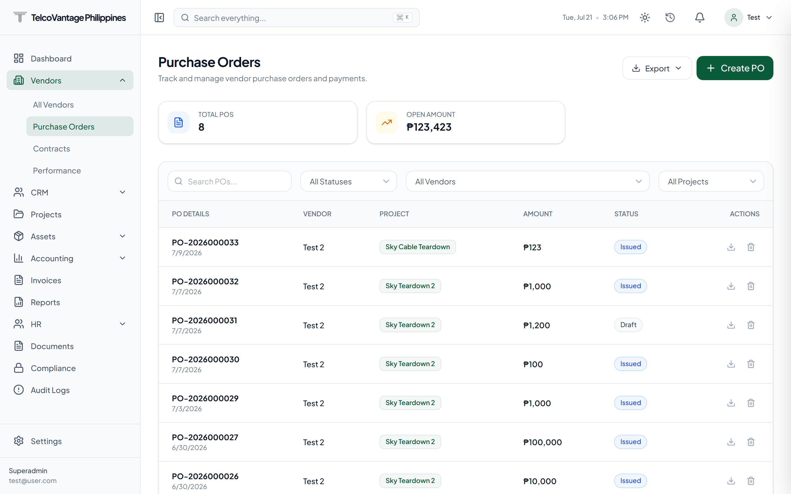</div>
    <figcaption>Purchase Orders — vendor, project, amount, and status, with per-row download and delete.</figcaption>
  </figure>
  <h4>The lifecycle</h4>
  <p>
    <span class="pill s">Draft</span> &nbsp;→&nbsp; <span class="pill a">Pending Approval</span> &nbsp;→&nbsp; <span class="pill b">Issued</span> &nbsp;→&nbsp; <span class="pill a">Partially Paid</span> &nbsp;→&nbsp; <span class="pill g">Paid</span> &nbsp;·&nbsp; <span class="pill r">Overpaid</span> &nbsp;·&nbsp; <span class="pill s">Cancelled</span>
  </p>
  <div class="foot"><span class="brand"><span class="logo"></span>TelcoVantage ERP · Purchase Orders</span><span class="pg">08</span></div>
</section>

<section class="page">
  <div class="blob peri" style="width:320px;height:320px;bottom:-150px;left:-130px;"></div>
  <h3><span class="num">4.1</span>Creating a draft PO</h3>
  <div class="callout perm"><span class="t">Who can do this</span>Superadmin, Admin, Operations</div>
  <ol class="steps">
    <li>Click <strong>Create PO</strong>, then pick the <strong>Vendor</strong> (and optional Project) and set the issued/due dates and terms.</li>
    <li>Add <strong>Line Items</strong> — Item Code, Description, Qty, UoM, Unit Price. The total shows live in the vendor's currency.</li>
    <li>Optionally add <strong>Sites &amp; Details</strong>, then click <strong>Create PO</strong>. It saves as <span class="pill s">Draft</span>.</li>
  </ol>
  <figure class="shot">
    <div class="frame"><div class="bar"><i class="d-r"></i><i class="d-y"></i><i class="d-g"></i><span class="addr">erp.telcovantage.com/dashboard/purchase-orders/new</span></div>
    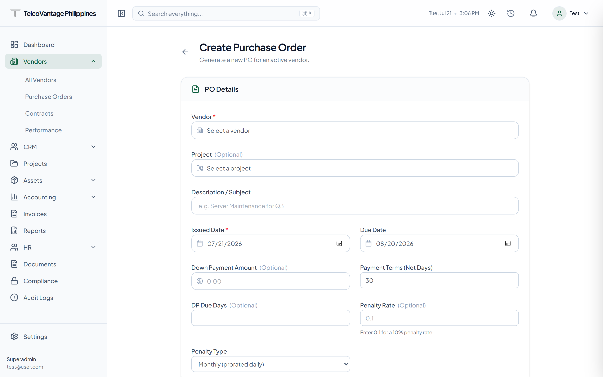</div>
    <figcaption>The Create Purchase Order form — details, line items, and site details.</figcaption>
  </figure>
  <div class="callout warn"><span class="t">The compliance gate</span>You can only create a PO for a vendor who is <strong>Active</strong> with an <strong>approved Signed NDA</strong>. If either is missing, the form blocks creation. Fix it on the vendor's Accreditation Docs tab, or (with permission) request a <strong>waiver</strong> — which needs executive approval before the PO can issue.</div>

  <h3><span class="num">4.2</span>Approve, issue &amp; document</h3>
  <ul class="points">
    <li><span class="n">01</span><strong>Submit for Approval</strong> and choose an admin approver (you can't pick yourself).</li>
    <li><span class="n">02</span>An admin clicks <strong>Approve &amp; Issue</strong> — the PO becomes <span class="pill b">Issued</span> and is emailed to the vendor automatically.</li>
    <li><span class="n">03</span>Use the <strong>Download</strong> menu for PDF or DOCX, or <strong>Edit DOCX</strong> to customize wording and save it back.</li>
  </ul>
  <div class="callout tip"><span class="t">Completion certificates</span>On the PO page, submit a <strong>% Complete</strong> certificate; once an admin approves it, that percentage sets the billing ceiling for supplier invoices (see Chapter 5).</div>
  <div class="foot"><span class="brand"><span class="logo"></span>TelcoVantage ERP · Purchase Orders</span><span class="pg">09</span></div>
</section>

<!-- ==================================================== CH 5 ==================================================== -->
<section class="page" id="ch5">
  <div class="blob mint" style="width:360px;height:360px;top:-150px;right:-130px;"></div>
  <div class="ch-index"><span class="big">Chapter 05</span></div>
  <div class="eyebrow">Supplier Invoices &amp; Payments</div>
  <h2 class="title">Match the invoice.<br>Protect the payment.</h2>
  <p class="lead">Record what vendors bill against their POs, then track and pay it. This is the Accounts Payable side of the business.</p>
  <figure class="shot">
    <div class="frame"><div class="bar"><i class="d-r"></i><i class="d-y"></i><i class="d-g"></i><span class="addr">erp.telcovantage.com/dashboard/invoices</span></div>
    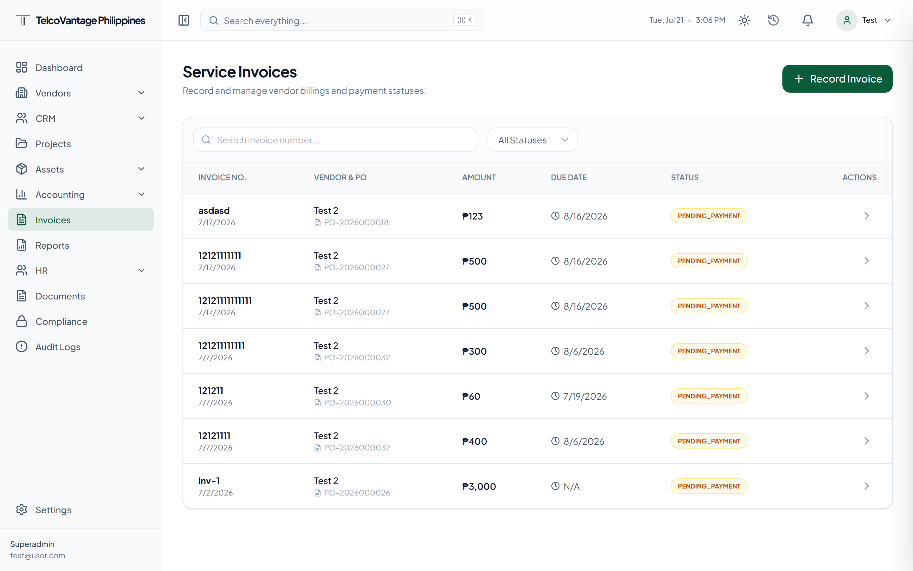</div>
    <figcaption>Service Invoices — vendor billings linked to POs, with amount, due date, and status.</figcaption>
  </figure>
  <ul class="points">
    <li><span class="n">01</span>Invoices link to the right PO — pick the vendor first to reveal their open POs.</li>
    <li><span class="n">02</span>Amount guards catch overbilling beyond the PO or approved completion percentage.</li>
    <li><span class="n">03</span>Due dates and payment status stay visible across the whole list.</li>
  </ul>
  <div class="callout perm"><span class="t">Who works here</span>Invoices &amp; payments: Superadmin, Admin, <strong>Finance</strong>. Payment Requests: Superadmin, Admin, <strong>Operations</strong>.</div>
  <div class="foot"><span class="brand"><span class="logo"></span>TelcoVantage ERP · Invoices &amp; Payments</span><span class="pg">10</span></div>
</section>

<section class="page">
  <div class="blob peri" style="width:320px;height:320px;bottom:-150px;left:-130px;"></div>
  <h3><span class="num">5.1</span>Recording &amp; scanning an invoice</h3>
  <ol class="steps">
    <li>Go to <strong>Invoices → Record Invoice</strong>. Pick the <strong>Vendor</strong> first to unlock the <strong>Related Purchase Order</strong> list.</li>
    <li>Enter the number, amount, and date (the due date fills from the PO's terms), then the mode of payment and expense category.</li>
    <li>Or drag a PDF/photo into <strong>scan</strong> — OCR fills the fields and matches the vendor &amp; PO. Always review, then <strong>Record Invoice</strong>.</li>
  </ol>
  <figure class="shot">
    <div class="frame"><div class="bar"><i class="d-r"></i><i class="d-y"></i><i class="d-g"></i><span class="addr">erp.telcovantage.com/dashboard/invoices/new</span></div>
    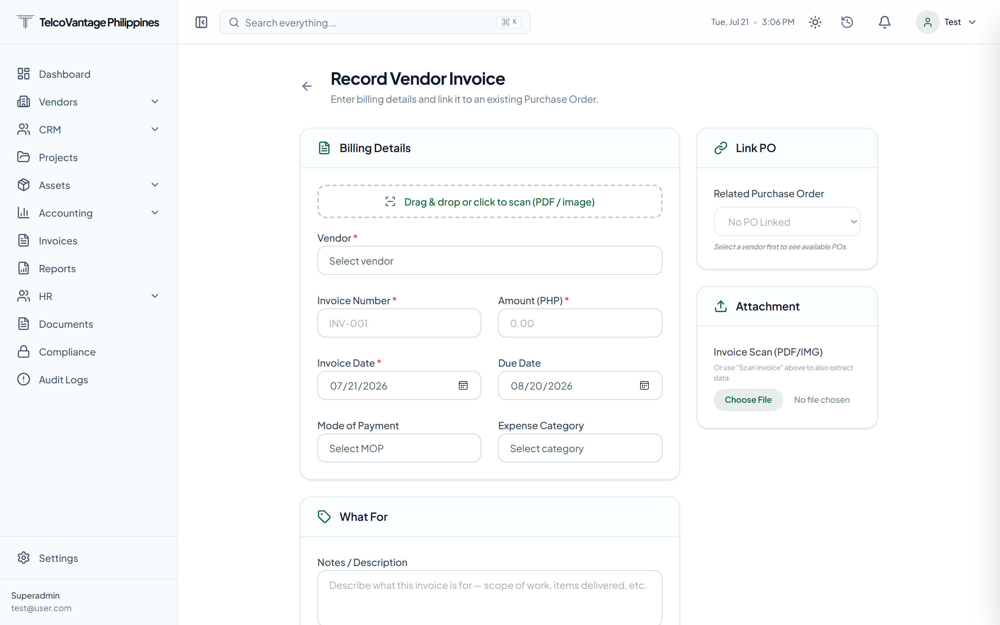</div>
    <figcaption>Record Vendor Invoice — link a PO, scan with OCR, and attach the invoice.</figcaption>
  </figure>
  <div class="callout warn"><span class="t">Overbilling is blocked</span>Billing is capped at the PO amount, or at the approved completion percentage if a certificate exists. The error tells you exactly how much is left to bill.</div>

  <h3><span class="num">5.2</span>Payment Requests &amp; recording payment</h3>
  <ul class="points">
    <li><span class="n">01</span>A <strong>Payment Request (PR)</strong> — created on the PO page — authorizes a subcontractor to bill up to a set amount; Finance approves it.</li>
    <li><span class="n">02</span>To pay, open the invoice → <strong>Record Payment</strong>: amount, date, method, and a reference number (required unless Cash).</li>
    <li><span class="n">03</span>Attach both the <strong>Payment Voucher</strong> and <strong>Proof of Payment</strong> (both required); the Official Receipt can be added later.</li>
  </ul>
  <figure class="shot">
    <div class="frame"><div class="bar"><i class="d-r"></i><i class="d-y"></i><i class="d-g"></i><span class="addr">erp.telcovantage.com/dashboard/accounting</span></div>
    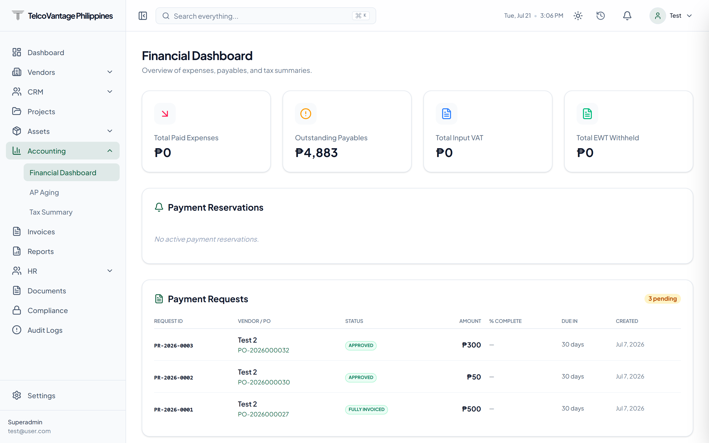</div>
    <figcaption>The Financial Dashboard — paid expenses, outstanding payables, VAT/EWT, and AP aging.</figcaption>
  </figure>
  <div class="foot"><span class="brand"><span class="logo"></span>TelcoVantage ERP · Invoices &amp; Payments</span><span class="pg">11</span></div>
</section>

<!-- ==================================================== CH 6 ==================================================== -->
<section class="page" id="ch6">
  <div class="blob mint" style="width:360px;height:360px;top:-150px;right:-130px;"></div>
  <div class="ch-index"><span class="big">Chapter 06</span></div>
  <div class="eyebrow">CRM · Client POs · Client Invoices</div>
  <h2 class="title">The customer side.</h2>
  <p class="lead">Manage accounts, track the POs clients issue to TVPH, and bill and collect receivables.</p>
  <figure class="shot">
    <div class="frame"><div class="bar"><i class="d-r"></i><i class="d-y"></i><i class="d-g"></i><span class="addr">erp.telcovantage.com/dashboard/crm</span></div>
    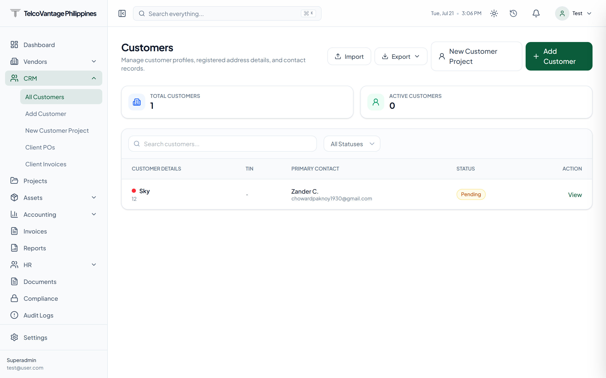</div>
    <figcaption>The CRM customer list — accounts, TIN, primary contact, and status.</figcaption>
  </figure>
  <div class="callout perm"><span class="t">Who works here</span>Customers &amp; projects: Superadmin, Admin, Operations. Client invoices &amp; payments: Superadmin, Admin, Finance.</div>
  <h3><span class="num">6.1</span>Adding a customer</h3>
  <ol class="steps">
    <li>Click <strong>Add Customer</strong>; enter the <strong>Customer Name</strong> (required), address, TIN, and status.</li>
    <li>Add at least one <strong>contact</strong> (required); mark one as primary. Click <strong>Save Customer</strong>.</li>
  </ol>
  <figure class="shot">
    <div class="frame"><div class="bar"><i class="d-r"></i><i class="d-y"></i><i class="d-g"></i><span class="addr">erp.telcovantage.com/dashboard/crm/new</span></div>
    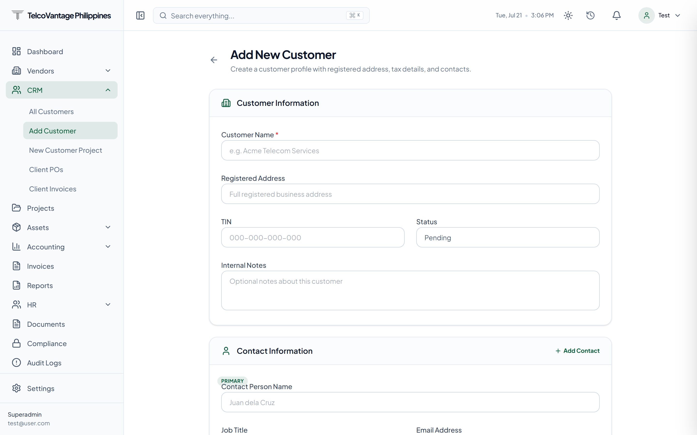</div>
    <figcaption>Add New Customer — customer information plus one or more contacts.</figcaption>
  </figure>
  <div class="foot"><span class="brand"><span class="logo"></span>TelcoVantage ERP · CRM</span><span class="pg">12</span></div>
</section>

<section class="page">
  <div class="blob peri" style="width:320px;height:320px;bottom:-150px;left:-130px;"></div>
  <h3><span class="num">6.2</span>Client POs &amp; client invoices</h3>
  <p>A <strong>client PO</strong> is a purchase order a customer issues to TVPH; <strong>client invoices</strong> bill against it and track collections.</p>
  <ol class="steps">
    <li>Under <strong>CRM → Client POs</strong>, click <strong>Record Client PO</strong> — choose the client, PO number, received date, currency, and amount.</li>
    <li>Under <strong>CRM → Client Invoices</strong>, click <strong>Record Invoice</strong>, pick the client and their PO, and enter the invoice details.</li>
    <li>On the invoice, click <strong>Mark as Sent</strong>, then <strong>Record Payment</strong> when the client pays (reference required unless Cash).</li>
  </ol>
  <div class="cards">
    <div class="card" style="padding:0;overflow:hidden;">
      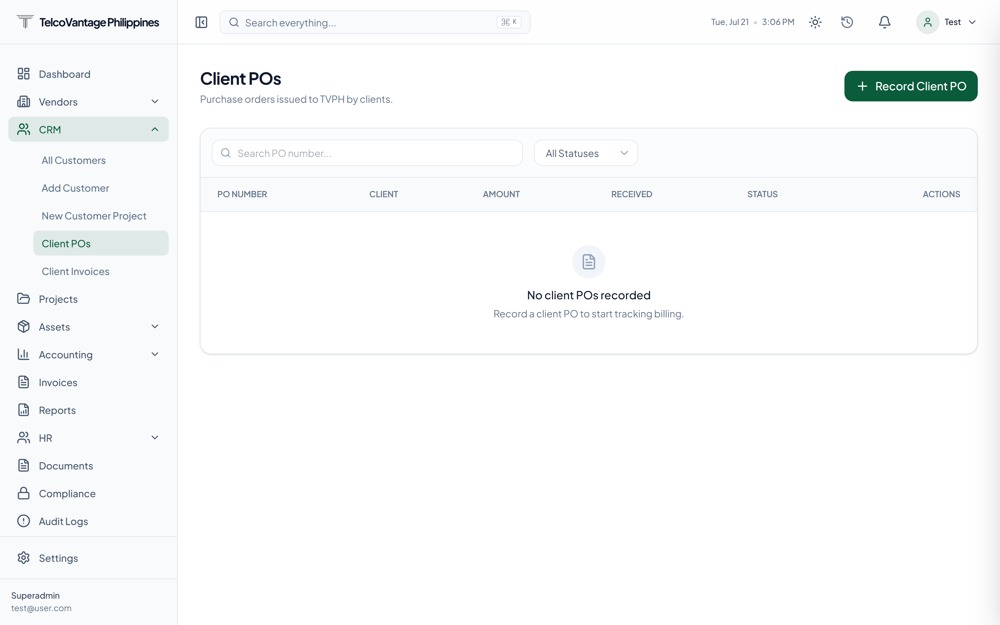
      <div style="padding:9px 12px;"><p><strong>Client POs</strong> — received → partially billed → fully billed.</p></div>
    </div>
    <div class="card" style="padding:0;overflow:hidden;">
      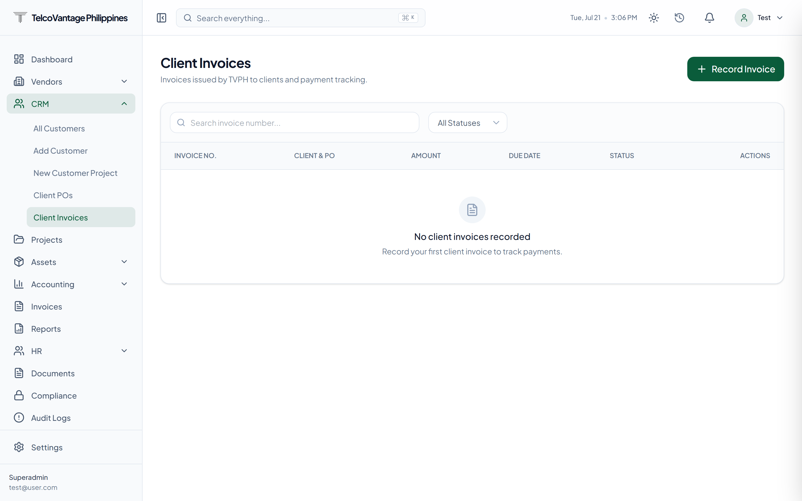
      <div style="padding:9px 12px;"><p><strong>Client Invoices</strong> — draft → sent → paid, with payment history.</p></div>
    </div>
  </div>
  <div class="callout warn"><span class="t">Over-billing is blocked</span>You can't invoice a client for more than their PO amount — the system shows how much has already been billed.</div>
  <div class="foot"><span class="brand"><span class="logo"></span>TelcoVantage ERP · CRM</span><span class="pg">13</span></div>
</section>

<!-- ==================================================== CH 7 ==================================================== -->
<section class="page" id="ch7">
  <div class="blob mint" style="width:360px;height:360px;top:-150px;right:-130px;"></div>
  <div class="ch-index"><span class="big">Chapter 07</span></div>
  <div class="eyebrow">Projects &amp; Contracts</div>
  <h2 class="title">Tie the work together.</h2>
  <p class="lead">Projects connect the commercial and delivery sides — the customer, the vendors doing the work, the contract file, and the connected purchase orders.</p>
  <figure class="shot">
    <div class="frame"><div class="bar"><i class="d-r"></i><i class="d-y"></i><i class="d-g"></i><span class="addr">erp.telcovantage.com/dashboard/projects</span></div>
    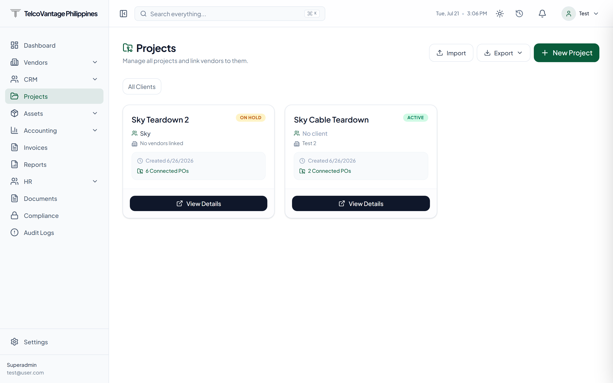</div>
    <figcaption>Projects — each card shows the client, linked vendors, connected POs, and status.</figcaption>
  </figure>
  <div class="callout perm"><span class="t">Who can manage projects</span>Superadmin, Admin, Operations</div>
  <ol class="steps">
    <li>Click <strong>New Project</strong>; enter the name, optionally link a <strong>client</strong>, set status, and attach a contract document.</li>
    <li>On the project page, <strong>Link Vendor</strong> to attach suppliers; each shows their PO count.</li>
    <li>Review <strong>Connected POs</strong> and <strong>Progress &amp; Billing</strong> — completion percentage and a per-PO breakdown.</li>
  </ol>
  <div class="callout tip"><span class="t">Two kinds of contract</span>The project's own <strong>Contract Document</strong> stores one file on the project; the formal legal agreement registered against a vendor lives in <span class="path">Vendors → Contracts</span>.</div>
  <div class="foot"><span class="brand"><span class="logo"></span>TelcoVantage ERP · Projects</span><span class="pg">14</span></div>
</section>

<!-- ==================================================== CH 8 ==================================================== -->
<section class="page" id="ch8">
  <div class="blob mint" style="width:360px;height:360px;top:-150px;right:-130px;"></div>
  <div class="ch-index"><span class="big">Chapter 08</span></div>
  <div class="eyebrow">Document Center</div>
  <h2 class="title">Every record, one place.</h2>
  <p class="lead">Find company, vendor, and customer records in one repository, split into three vaults.</p>
  <figure class="shot">
    <div class="frame"><div class="bar"><i class="d-r"></i><i class="d-y"></i><i class="d-g"></i><span class="addr">erp.telcovantage.com/dashboard/documents</span></div>
    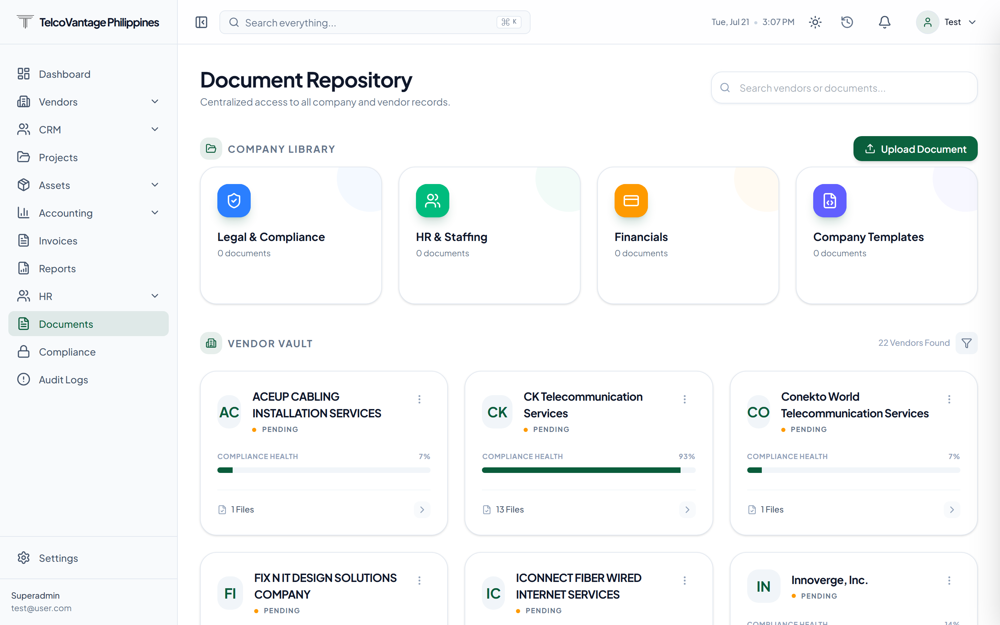</div>
    <figcaption>The Document Repository — Company Library, Vendor Vault, and Customer Vault.</figcaption>
  </figure>
  <div class="cards">
    <div class="card"><div class="k">INTERNAL</div><h4>Company Library</h4><p>Legal, HR, Financials, and Templates. Admins click <strong>Upload Document</strong>, choose a folder, and add a title.</p></div>
    <div class="card"><div class="k">SUPPLIERS</div><h4>Vendor Vault</h4><p>Read-only view of accreditation files. Upload from the vendor's Accreditation Docs tab.</p></div>
    <div class="card"><div class="k">CUSTOMERS</div><h4>Customer Vault</h4><p>Read-only view of CRM documents. Manage them from the customer's Documents tab.</p></div>
  </div>
  <div class="callout warn"><span class="t">Sensitive documents</span>Audited Financial Statements, the Vendor Information Summary, and SEC Registration are restricted — only <strong>Admin</strong> or <strong>Finance</strong> can view them.</div>
  <div class="foot"><span class="brand"><span class="logo"></span>TelcoVantage ERP · Documents</span><span class="pg">15</span></div>
</section>

<!-- ==================================================== CH 9 ==================================================== -->
<section class="page" id="ch9">
  <div class="blob mint" style="width:360px;height:360px;top:-150px;right:-130px;"></div>
  <div class="ch-index"><span class="big">Chapter 09</span></div>
  <div class="eyebrow">HR &amp; Assets</div>
  <h2 class="title">People and equipment.</h2>
  <p class="lead">Keep employee 201 files and the company asset registry in the same system as everything else.</p>
  <div class="cards">
    <div class="card" style="padding:0;overflow:hidden;">
      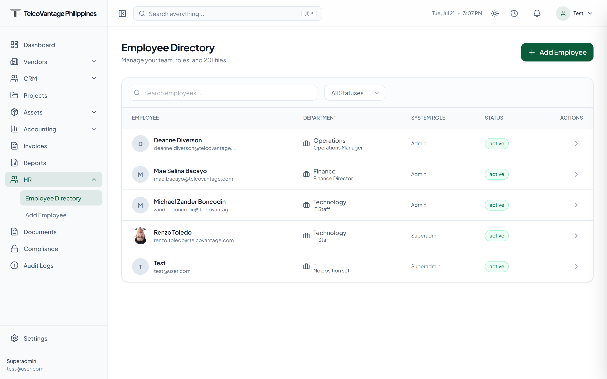
      <div style="padding:10px 13px;"><div class="k" style="color:var(--emerald);font-weight:800;font-size:8pt;">HR</div><h4 style="margin:4px 0;">Employee Directory</h4><p style="color:var(--muted);font-size:9pt;">Add staff via <strong>Add Employee</strong> (Admins), then upload 201 files on their profile.</p></div>
    </div>
    <div class="card" style="padding:0;overflow:hidden;">
      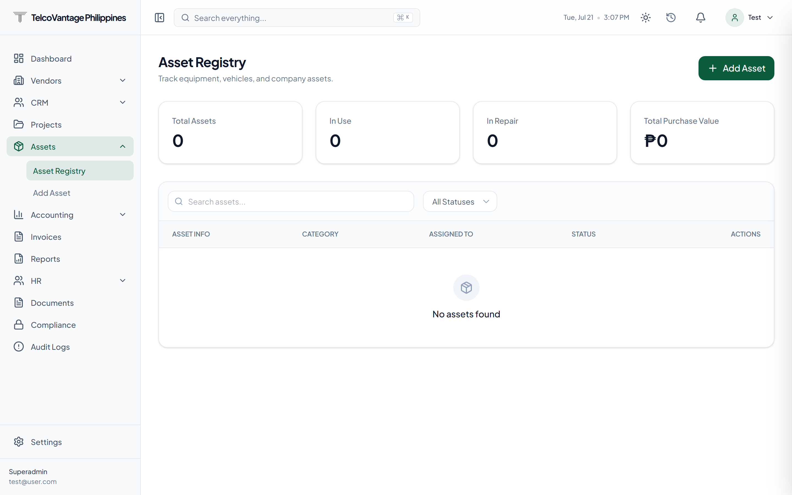
      <div style="padding:10px 13px;"><div class="k" style="color:var(--emerald);font-weight:800;font-size:8pt;">ASSETS</div><h4 style="margin:4px 0;">Asset Registry</h4><p style="color:var(--muted);font-size:9pt;">Add assets, assign them, and log maintenance — a repair auto-sets status to <em>In Repair</em>.</p></div>
    </div>
  </div>
  <div class="callout perm"><span class="t">Who can do this</span>Add/edit employees &amp; 201 files: Superadmin, Admin. Add/edit assets &amp; maintenance: Superadmin, Admin, Operations. Everyone can view both.</div>
  <ol class="steps">
    <li><strong>HR:</strong> click <strong>Add Employee</strong>, enter name, email, temporary password, and a system role → <strong>Send Invitation</strong>.</li>
    <li><strong>201 files:</strong> open an employee, pick a document type, and click <strong>Select File</strong> — the upload starts immediately.</li>
    <li><strong>Assets:</strong> click <strong>Add Asset</strong> (a <code>TVPH-AST-0001</code> tag is generated); log work under <strong>Log Maintenance</strong>.</li>
  </ol>
  <div class="foot"><span class="brand"><span class="logo"></span>TelcoVantage ERP · HR &amp; Assets</span><span class="pg">16</span></div>
</section>

<!-- ==================================================== CH 10 ==================================================== -->
<section class="page" id="ch10">
  <div class="blob mint" style="width:360px;height:360px;top:-150px;right:-130px;"></div>
  <div class="ch-index"><span class="big">Chapter 10</span></div>
  <div class="eyebrow">Reports</div>
  <h2 class="title">One click to PDF.</h2>
  <p class="lead">Generate formatted PDF reports from live data. Each report is a card with a <strong>Download PDF</strong> button.</p>
  <figure class="shot">
    <div class="frame"><div class="bar"><i class="d-r"></i><i class="d-y"></i><i class="d-g"></i><span class="addr">erp.telcovantage.com/dashboard/reports</span></div>
    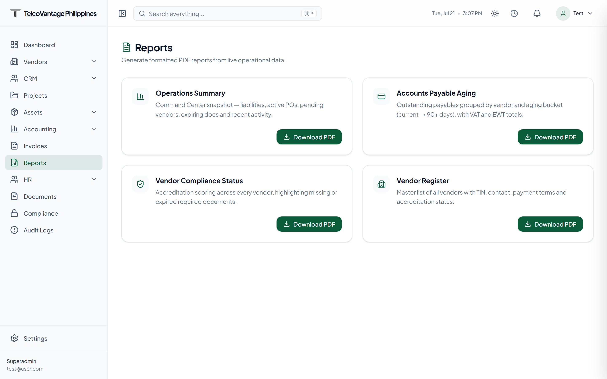</div>
    <figcaption>The Reports hub — four live PDF reports.</figcaption>
  </figure>
  <div class="callout perm"><span class="t">Who can access Reports</span>Superadmin, Admin, Finance</div>
  <table class="grid">
    <thead><tr><th>Report</th><th>What it shows</th></tr></thead>
    <tbody>
      <tr><td><strong>Operations Summary</strong></td><td>Command Center snapshot — liabilities, active POs, pending vendors, expiring docs, activity.</td></tr>
      <tr><td><strong>Accounts Payable Aging</strong></td><td>Outstanding payables by vendor across Current / 1-30 / 31-60 / 61-90 / &gt;90 buckets, plus VAT &amp; EWT.</td></tr>
      <tr><td><strong>Vendor Compliance Status</strong></td><td>Accreditation progress across all vendors.</td></tr>
      <tr><td><strong>Vendor Register</strong></td><td>A full register of vendors and their key details.</td></tr>
    </tbody>
  </table>
  <div class="foot"><span class="brand"><span class="logo"></span>TelcoVantage ERP · Reports</span><span class="pg">17</span></div>
</section>

<!-- ==================================================== CH 11 ==================================================== -->
<section class="page" id="ch11">
  <div class="blob mint" style="width:360px;height:360px;top:-150px;right:-130px;"></div>
  <div class="ch-index"><span class="big">Chapter 11</span></div>
  <div class="eyebrow">AI Assistant &amp; Imports</div>
  <h2 class="title">Ask, and import.</h2>
  <p class="lead">A helper on every screen, plus AI-assisted spreadsheet import for vendors and customers.</p>

  <h3><span class="num">11.1</span>The TVPH Assistant</h3>
  <p>Open the floating helper in the bottom-left corner to reach the <strong>TVPH Assistant</strong>.</p>
  <ul class="points">
    <li><span class="n">01</span>Ask in plain language — "Who are our top vendors?", "List pending POs", "What's our compliance score?"</li>
    <li><span class="n">02</span>Attach a file with the paperclip to analyze or import it; the assistant knows which page you're on.</li>
    <li><span class="n">03</span>It can create vendors, customers, and draft POs — but always shows a summary and waits for your <strong>yes</strong>.</li>
  </ul>
  <div class="callout note"><span class="t">Same rules apply</span>Anything the assistant creates follows the same permissions and controls as doing it by hand — a drafted PO still needs an active vendor with an approved NDA.</div>

  <h3><span class="num">11.2</span>Importing from a spreadsheet</h3>
  <ol class="steps">
    <li>On the Vendors or CRM list, click <strong>Import</strong> and drop a <strong>.csv</strong> or <strong>.xlsx</strong> file.</li>
    <li>Review the <strong>Column Mapping</strong> — auto-matched, with AI suggestions for anything unclear. Adjust as needed.</li>
    <li>When validation passes, click <strong>Confirm &amp; Import</strong> to see created / updated / error counts.</li>
  </ol>
  <div class="callout tip"><span class="t">Required columns</span>Vendors need a <strong>Vendor Name</strong>; customers need a <strong>Company Name</strong>. Everything else can be mapped or ignored.</div>
  <div class="foot"><span class="brand"><span class="logo"></span>TelcoVantage ERP · AI &amp; Imports</span><span class="pg">18</span></div>
</section>

<!-- ==================================================== APPENDIX A ==================================================== -->
<section class="page" id="apxA">
  <div class="blob peri" style="width:340px;height:340px;top:-130px;right:-120px;"></div>
  <div class="ch-index"><span class="big">Appendix A</span></div>
  <div class="eyebrow">Roles &amp; Permissions</div>
  <h2 class="title">Who can do what.</h2>
  <p class="lead">What you can do depends on your role. Administrators assign roles in <span class="path">Settings → Team Management</span>.</p>
  <table class="grid">
    <thead><tr><th>Action</th><th>Super&shy;admin</th><th>Admin</th><th>Finance</th><th>Operations</th><th>Viewer</th></tr></thead>
    <tbody>
      <tr><td>Add / edit vendors, activate</td><td class="yes">✓</td><td class="yes">✓</td><td class="no">—</td><td class="yes">✓</td><td class="no">—</td></tr>
      <tr><td>Approve accreditation documents</td><td class="yes">✓</td><td class="yes">✓</td><td class="no">—</td><td class="yes">✓</td><td class="no">—</td></tr>
      <tr><td>Create a purchase order</td><td class="yes">✓</td><td class="yes">✓</td><td class="no">—</td><td class="yes">✓</td><td class="no">—</td></tr>
      <tr><td>Submit a PO for approval</td><td class="yes">✓</td><td class="yes">✓</td><td class="yes">✓</td><td class="yes">✓</td><td class="no">—</td></tr>
      <tr><td>Approve &amp; issue a PO / approve waiver</td><td class="yes">✓</td><td class="yes">✓</td><td class="no">—</td><td class="no">—</td><td class="no">—</td></tr>
      <tr><td>Approve a completion certificate</td><td class="yes">✓</td><td class="yes">✓</td><td class="no">—</td><td class="no">—</td><td class="no">—</td></tr>
      <tr><td>Record supplier invoices &amp; payments</td><td class="yes">✓</td><td class="yes">✓</td><td class="yes">✓</td><td class="no">—</td><td class="no">—</td></tr>
      <tr><td>Create a Payment Request</td><td class="yes">✓</td><td class="yes">✓</td><td class="no">—</td><td class="yes">✓</td><td class="no">—</td></tr>
      <tr><td>Approve a Payment Request</td><td class="yes">✓</td><td class="yes">✓</td><td class="yes">✓</td><td class="no">—</td><td class="no">—</td></tr>
      <tr><td>Manage customers &amp; projects</td><td class="yes">✓</td><td class="yes">✓</td><td class="no">—</td><td class="yes">✓</td><td class="no">—</td></tr>
      <tr><td>Client invoices &amp; collections</td><td class="yes">✓</td><td class="yes">✓</td><td class="yes">✓</td><td class="no">—</td><td class="no">—</td></tr>
      <tr><td>Upload to the Company Library</td><td class="yes">✓</td><td class="yes">✓</td><td class="no">—</td><td class="no">—</td><td class="no">—</td></tr>
      <tr><td>Add / edit assets, log maintenance</td><td class="yes">✓</td><td class="yes">✓</td><td class="no">—</td><td class="yes">✓</td><td class="no">—</td></tr>
      <tr><td>Add / edit employees &amp; 201 files</td><td class="yes">✓</td><td class="yes">✓</td><td class="no">—</td><td class="no">—</td><td class="no">—</td></tr>
      <tr><td>Generate reports</td><td class="yes">✓</td><td class="yes">✓</td><td class="yes">✓*</td><td class="yes">✓*</td><td class="no">—</td></tr>
      <tr><td>Delete a vendor or PO · view audit logs</td><td class="yes">✓</td><td class="no">—</td><td class="no">—</td><td class="no">—</td><td class="no">—</td></tr>
    </tbody>
  </table>
  <p class="role-line">* Financial reports (Operations Summary, AP Aging) require Finance or above; the vendor reports (Compliance, Register) are also open to Operations.</p>
  <div class="callout note"><span class="t">If a button is missing</span>The app hides actions your role can't perform. If you need access, ask an administrator to review your role rather than looking for a workaround.</div>
  <div class="foot"><span class="brand"><span class="logo"></span>TelcoVantage ERP · Appendix A</span><span class="pg">19</span></div>
</section>

<!-- ==================================================== APPENDIX B & C ==================================================== -->
<section class="page" id="apxB">
  <div class="blob mint" style="width:320px;height:320px;top:-130px;right:-120px;"></div>
  <div class="ch-index"><span class="big">Appendix B</span></div>
  <div class="eyebrow">Glossary</div>
  <h2 class="title">Key terms.</h2>
  <table class="grid">
    <tbody>
      <tr><td style="width:120px;"><strong>Accreditation</strong></td><td>The 14-document vetting a vendor completes to become an approved supplier.</td></tr>
      <tr><td><strong>AP / AR</strong></td><td>Accounts Payable (money owed to vendors) / Accounts Receivable (money owed by customers).</td></tr>
      <tr><td><strong>Client PO</strong></td><td>A purchase order a customer issues <em>to</em> TVPH (the receivables side).</td></tr>
      <tr><td><strong>Completion Certificate</strong></td><td>A record of the percentage of work done on a PO; the approved percentage sets how much can be billed.</td></tr>
      <tr><td><strong>EWT</strong></td><td>Expanded Withholding Tax withheld on invoices.</td></tr>
      <tr><td><strong>NDA</strong></td><td>Non-Disclosure Agreement. An approved Signed NDA is required before a vendor can receive POs.</td></tr>
      <tr><td><strong>PO</strong></td><td>Purchase Order issued by TVPH to a vendor.</td></tr>
      <tr><td><strong>PR (Payment Request)</strong></td><td>Authorization for a subcontractor to submit a progress-billing invoice up to a set amount. In this system, PR means Payment Request — not purchase requisition.</td></tr>
      <tr><td><strong>UoM</strong></td><td>Unit of Measure on a PO line (LOT, PCS, SET, HRS, DAYS, MOS, SQM, LM, KG).</td></tr>
      <tr><td><strong>Waiver</strong></td><td>Executive-approved permission to raise a PO for a vendor who doesn't yet meet the compliance gate.</td></tr>
      <tr><td><strong>201 File</strong></td><td>An employee's personnel document file.</td></tr>
    </tbody>
  </table>

  <div class="ch-index" style="margin-top:26px;"><span class="big">Appendix C</span></div>
  <div class="eyebrow">Troubleshooting</div>
  <h4>I can't create a PO for a vendor</h4>
  <p>The vendor must be <strong>Active</strong> with an <strong>approved Signed NDA</strong>. Fix it on the vendor's Accreditation Docs tab, or (with permission) request a waiver — which needs executive approval before issuing.</p>
  <h4>My PO won't send to the vendor</h4>
  <p>Issuing is two steps: <strong>Submit for Approval</strong>, then an admin clicks <strong>Approve &amp; Issue</strong>. You can't approve your own PO. If the email failed, use <strong>Resend to Vendor</strong>.</p>
  <h4>A payment won't save</h4>
  <p>Both the <strong>Payment Voucher</strong> and <strong>Proof of Payment</strong> are required, and a reference number is required unless the method is Cash. Files must be a PDF or image under 10 MB.</p>
  <h4>A menu or button I need isn't there</h4>
  <p>Access follows your role — the app hides what you can't use. Check Appendix A and ask an administrator to adjust your role if needed.</p>

  <hr class="soft">
  <p style="text-align:center;color:var(--muted);font-size:9pt;">
    <strong style="color:var(--emerald-700);">TelcoVantage ERP — User Guide</strong><br>
    Internal Project · TelcoVantage Philippines · All rights reserved.
  </p>
  <div class="foot"><span class="brand"><span class="logo"></span>TelcoVantage ERP · Appendix B &amp; C</span><span class="pg">20</span></div>
</section>
